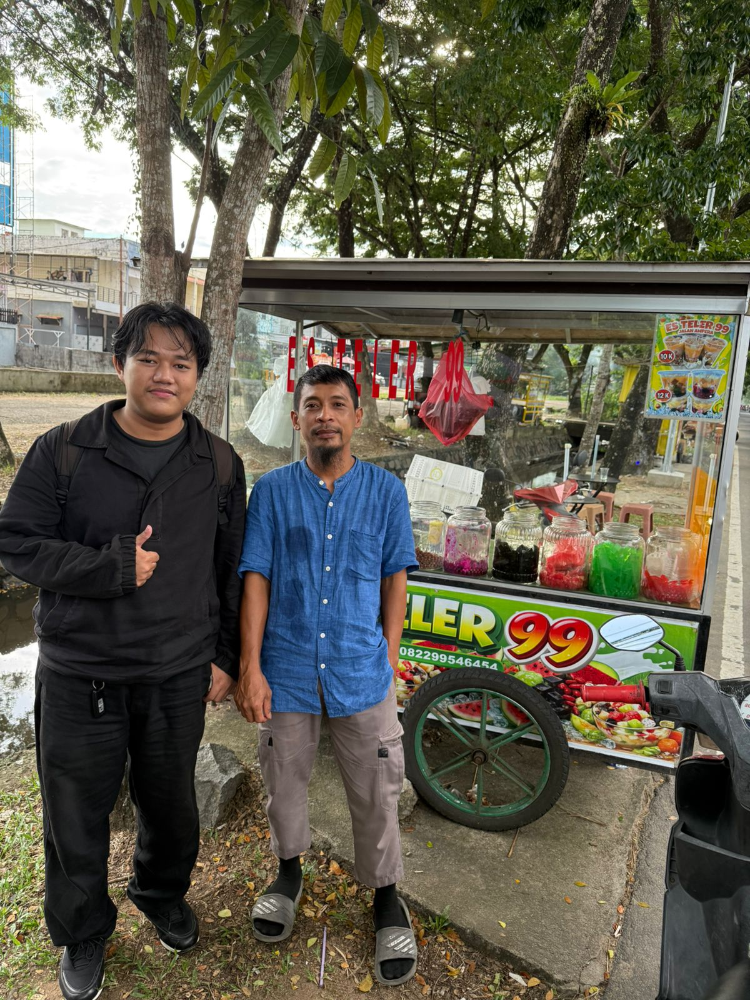

Nama: Muhammad Andy Maulana
No. HP: 082299546454
Alamat: Jalan Ampera,
Dekat Pesantren Darunna'im
Jam Operasional: 08:00 - 17:00
Kota: Pontianak, Kalimantan Barat
Pemilik adalah seorang pengusaha UMKM di bidang kuliner, khususnya minuman segar, yang berdiri sejak tahun 2023. Usaha ini menjual es teler sebagai produk utama, dengan berbagai varian ukuran yang berbeda, mulai dari ukuran kecil hingga besar. Pemilik memulai usaha ini dengan tujuan untuk memberikan pilihan minuman segar yang lezat dan menyegarkan bagi masyarakat, serta untuk mengembangkan bisnis kuliner yang sukses di Indonesia. Pemilik berkomitmen untuk menyediakan produk berkualitas tinggi dan pelayanan yang memuaskan kepada pelanggan.
Seiring berjalannya waktu, usaha es teler ini mengalami perkembangan dengan adanya perpindahan lokasi usaha. Pada awalnya, usaha dijalankan di simpang 4 dekat ujung pandang, namun karena kondisi penjualan yang kurang ramai, pemilik memutuskan untuk memindahkan lokasi usaha ke Jalan Ampera, dekat Pesantren Darunna'im. Perpindahan lokasi ini dilakukan untuk menjangkau lebih banyak pelanggan dan menyesuaikan kebutuhan usaha yang semakin berkembang. Dengan lokasi baru yang strategis, usaha es teler ini berhasil menarik lebih banyak pelanggan dan meningkatkan penjualan secara signifikan.
Dalam menjalankan usaha es teler, salah satu tantangan yang sering dihadapi adalah kondisi penjualan yang terkadang sepi, terutama saat cuaca kurang mendukung atau jumlah pelanggan menurun. Situasi ini menjadi hambatan dalam menjaga kestabilan pendapatan usaha. Meski demikian, pemilik usaha tetap berupaya meningkatkan kualitas rasa, pelayanan, serta mencari strategi agar usahanya tetap dikenal dan diminati pelanggan. Dengan semangat, konsistensi, dan kerja keras, setiap tantangan dijadikan sebagai pelajaran untuk terus mengembangkan usaha ke arah yang lebih baik.
Secara keseluruhan, perjalanan usaha es teler ini menunjukkan bahwa setiap tantangan merupakan bagian dari proses menuju perkembangan yang lebih baik. Dengan semangat, ketekunan, serta ikhtiar yang terus dilakukan dalam meningkatkan kualitas produk dan pelayanan, usaha ini mampu bertahan dan berkembang hingga berada pada posisi yang lebih menjanjikan. Selain usaha dan kerja keras, sikap tawakkal kepada Tuhan juga menjadi landasan penting dalam menghadapi berbagai hambatan yang ada. Diharapkan ke depannya usaha ini dapat terus berkembang, menarik lebih banyak pelanggan, serta memperoleh keberkahan dan keberhasilan yang lebih besar.